NISAR algorithm walkthrough Gray pixels are unsupported where a support mask is available. Continuous map displays use 1st/99th-percentile limits; paired before/after channels share limits. Exact unclipped values are in the downloadable NPZ files. Masks use 0/1; seeds use −1 uncertain, 0 unchanged, 1 changed; FCM labels use 0 low, 1 middle, 2 high. Spatial plots use raster pixel coordinates, not geographic axes. Changing color ranges is display-only.
Trace files may be partial if the run failed; see pipeline.log and run.jsonl. A smaller mask or lower loss does not establish better accuracy.
00_physical_baseline Independent physical baseline: absolute HH/HV dB changes divided by their valid-area 75th-percentile scales (floor 0.1 dB), averaged across polarizations, then a global Otsu threshold. No VGG, FCM or random forest is used in this baseline.
physical_abs_db_change 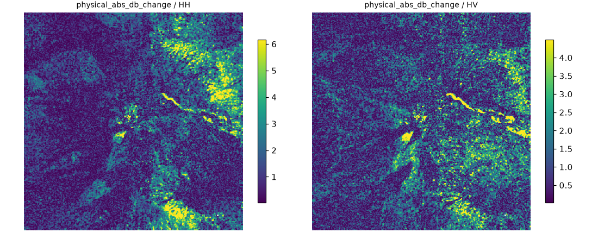
{'name': 'physical_abs_db_change', 'shape': [2, 498, 500], 'finite_count': 497982, 'minimum': 5.7220458984375e-06, 'maximum': 18.53632164001465} baseline_score 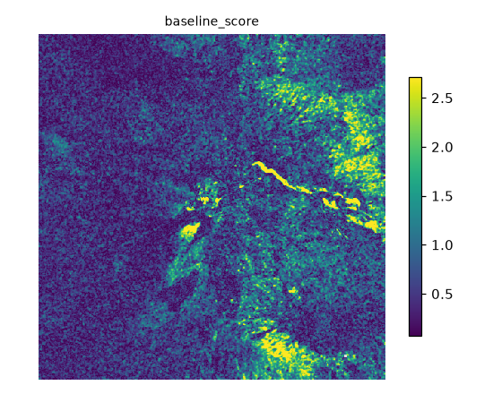
{'name': 'baseline_score', 'shape': [498, 500], 'finite_count': 248991, 'minimum': 0.0014306261235800166, 'maximum': 7.336208260620728} baseline_mask 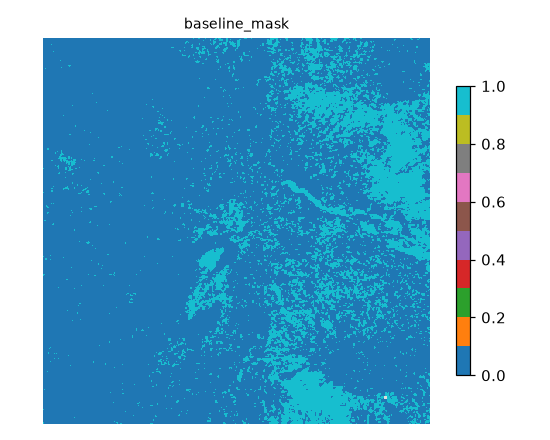
{'name': 'baseline_mask', 'shape': [498, 500], 'finite_count': 248991, 'minimum': 0.0, 'maximum': 1.0} model_support {'name': 'model_support', 'shape': [498, 500], 'finite_count': 249000, 'minimum': 0.0, 'maximum': 1.0} otsu_threshold 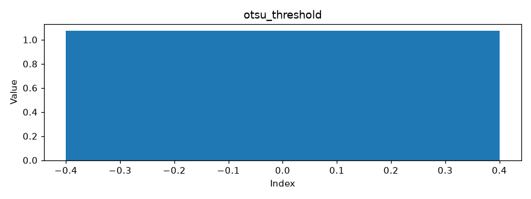
{'name': 'otsu_threshold', 'shape': [1], 'finite_count': 1, 'minimum': 1.0758609436768731, 'maximum': 1.0758609436768731} Training Held-out translation objective selects the checkpoint; this is not detection accuracy.
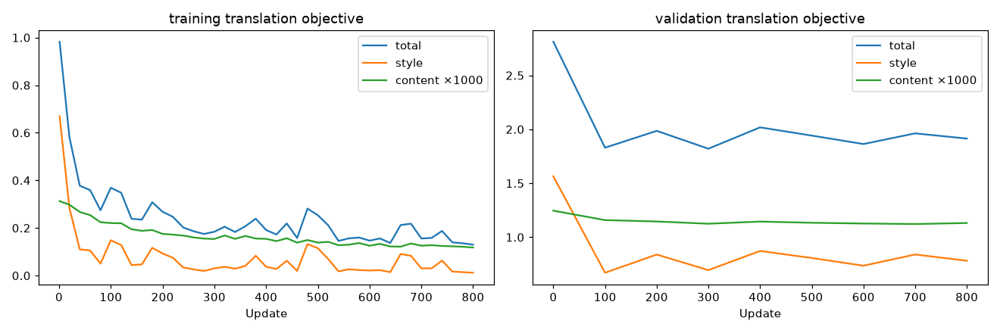
01_preprocessing Aligned frequency-A HH/HV gamma-0 power → masked linear-power mean → 10 log10(power) → HH dB, HV dB, HH−HV dB → shared per-channel 1st/99th percentile scaling → NISAR channel z-scores. Statistics use both dates on training support only. Alignment is grid reprojection when needed, not independently verified subpixel registration.
aligned_raw_power_pre distributions over valid area These are whole valid-area summaries; fitted mean/std use training support only.
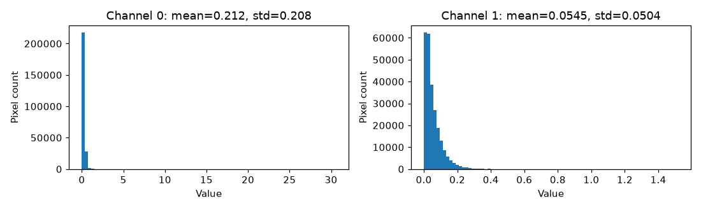
aligned_raw_power_pre 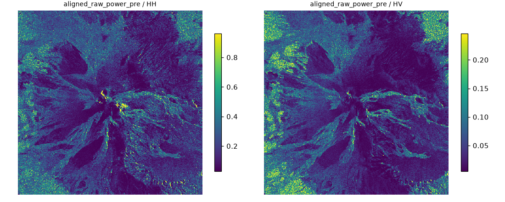
{'name': 'aligned_raw_power_pre', 'shape': [2, 498, 500], 'finite_count': 497998, 'minimum': 0.0004519820213317871, 'maximum': 30.554443359375} aligned_raw_power_post distributions over valid area These are whole valid-area summaries; fitted mean/std use training support only.
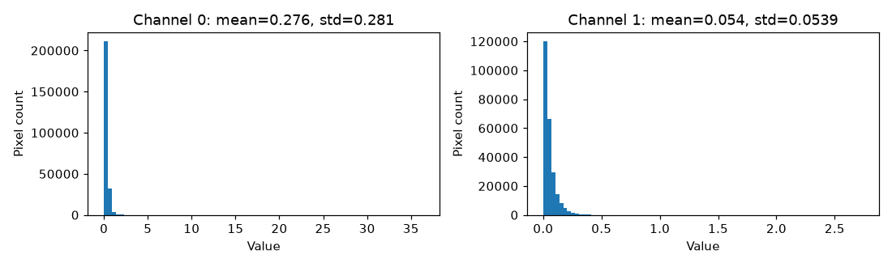
aligned_raw_power_post 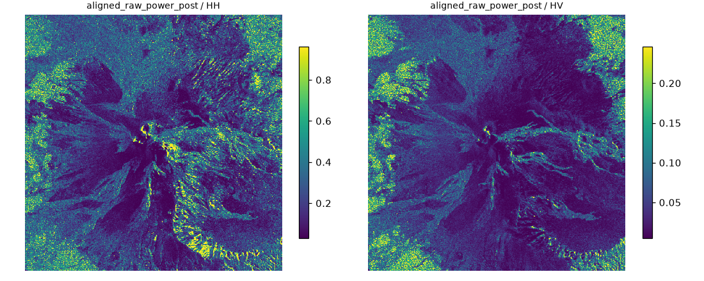
{'name': 'aligned_raw_power_post', 'shape': [2, 498, 500], 'finite_count': 497998, 'minimum': 0.0004473738372325897, 'maximum': 36.4150390625} raw_valid {'name': 'raw_valid', 'shape': [498, 500], 'finite_count': 249000, 'minimum': 0.0, 'maximum': 1.0} filtered_power_pre distributions over valid area These are whole valid-area summaries; fitted mean/std use training support only.
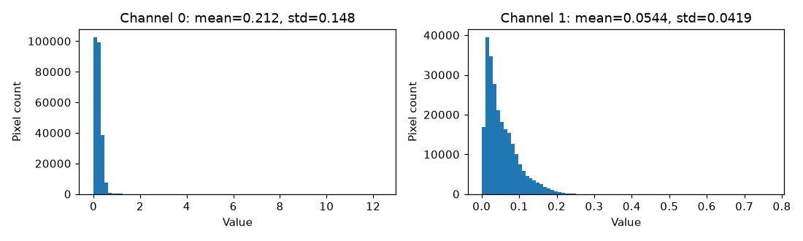
filtered_power_pre 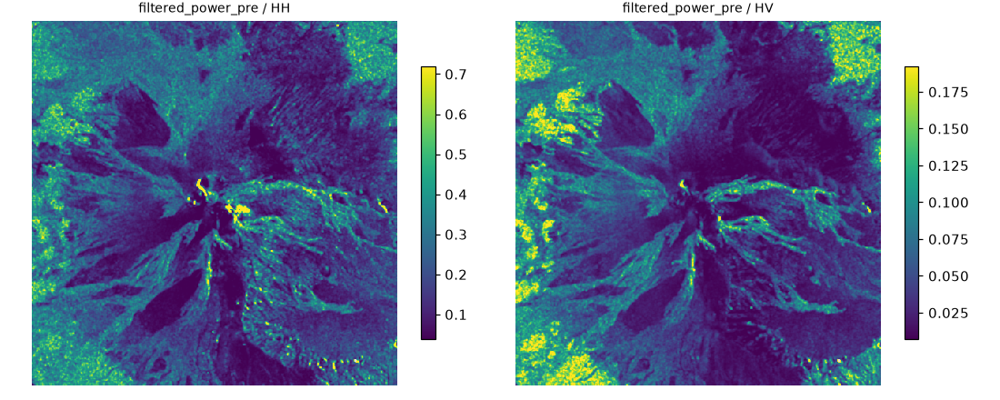
{'name': 'filtered_power_pre', 'shape': [2, 498, 500], 'finite_count': 497982, 'minimum': 0.0014231064124032855, 'maximum': 12.3529052734375} filtered_power_post distributions over valid area These are whole valid-area summaries; fitted mean/std use training support only.
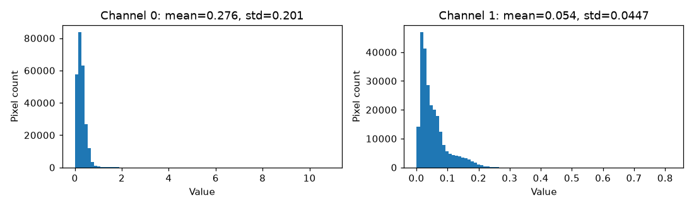
filtered_power_post 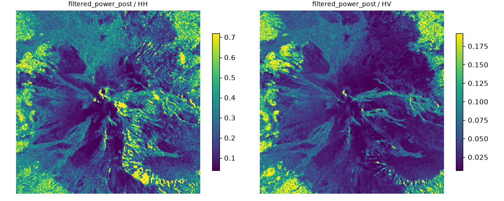
{'name': 'filtered_power_post', 'shape': [2, 498, 500], 'finite_count': 497982, 'minimum': 0.0009946421487256885, 'maximum': 10.83401107788086} filtered_valid {'name': 'filtered_valid', 'shape': [498, 500], 'finite_count': 249000, 'minimum': 0.0, 'maximum': 1.0} physical_features_pre distributions over valid area These are whole valid-area summaries; fitted mean/std use training support only.
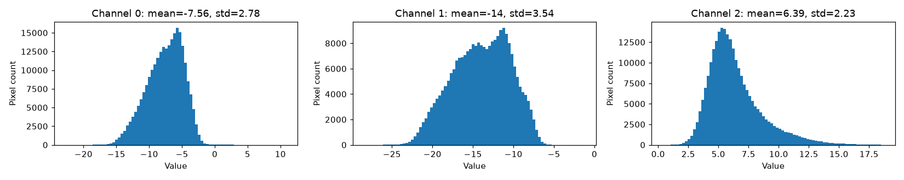
physical_features_pre 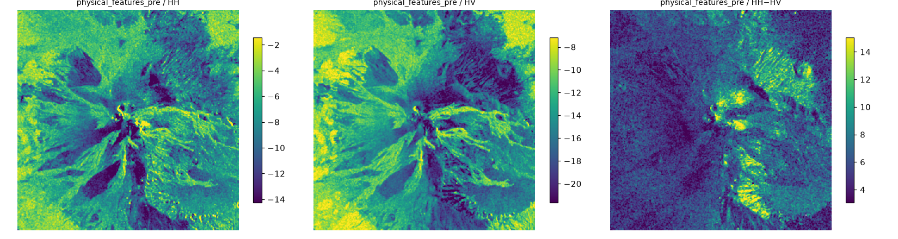
{'name': 'physical_features_pre', 'shape': [3, 498, 500], 'finite_count': 746973, 'minimum': -28.467626571655273, 'maximum': 18.734209060668945} physical_features_post distributions over valid area These are whole valid-area summaries; fitted mean/std use training support only.
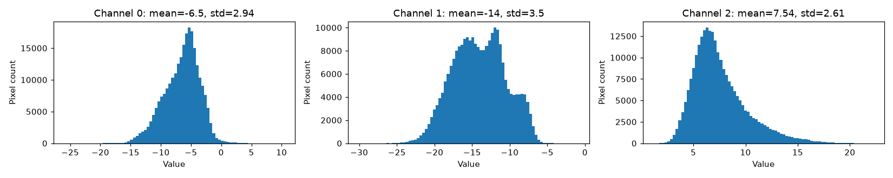
physical_features_post 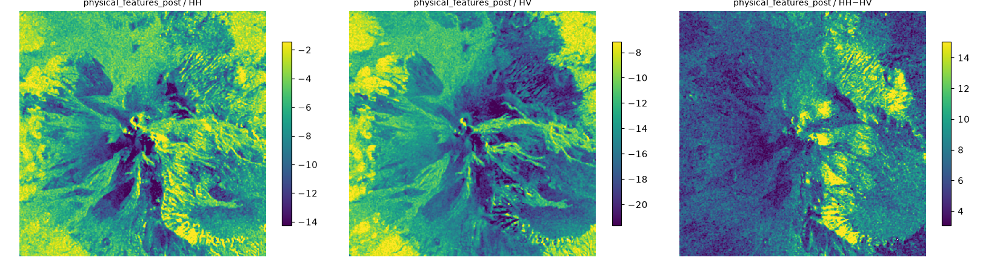
{'name': 'physical_features_post', 'shape': [3, 498, 500], 'finite_count': 746973, 'minimum': -30.023330688476562, 'maximum': 22.223529815673828} percentile_scaled_pre distributions over valid area These are whole valid-area summaries; fitted mean/std use training support only.
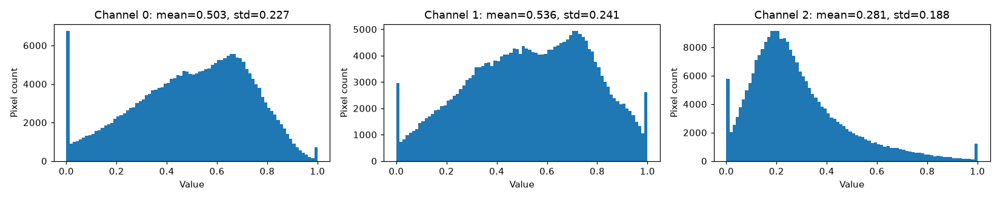
percentile_scaled_pre 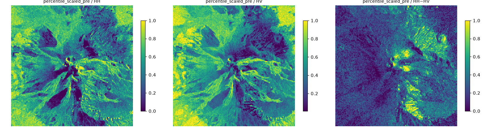
{'name': 'percentile_scaled_pre', 'shape': [3, 498, 500], 'finite_count': 746973, 'minimum': 0.0, 'maximum': 1.0} percentile_scaled_post distributions over valid area These are whole valid-area summaries; fitted mean/std use training support only.
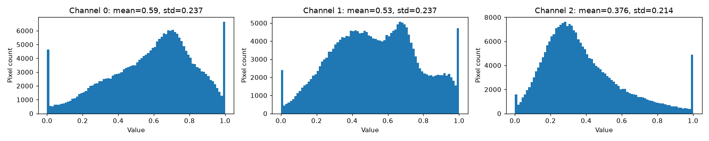
percentile_scaled_post 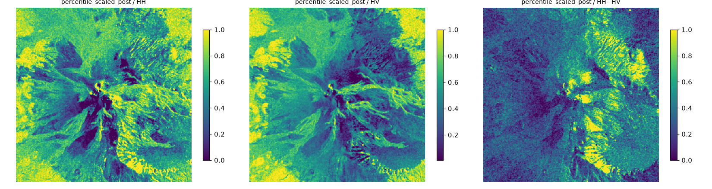
{'name': 'percentile_scaled_post', 'shape': [3, 498, 500], 'finite_count': 746973, 'minimum': 0.0, 'maximum': 1.0} vgg_input_pre distributions over valid area These are whole valid-area summaries; fitted mean/std use training support only.
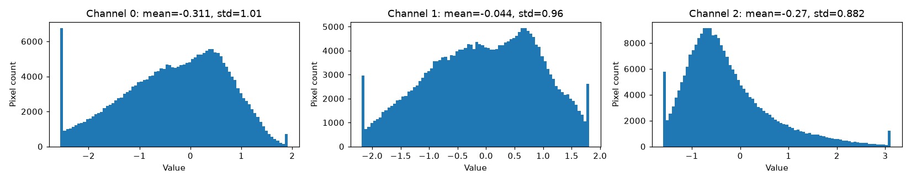
vgg_input_pre 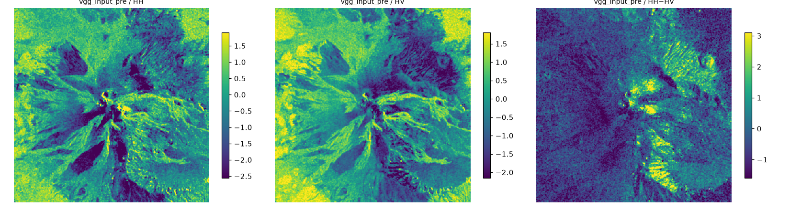
{'name': 'vgg_input_pre', 'shape': [3, 498, 500], 'finite_count': 746973, 'minimum': -2.5540257199254195, 'maximum': 3.1090722342683006} vgg_input_post distributions over valid area These are whole valid-area summaries; fitted mean/std use training support only.
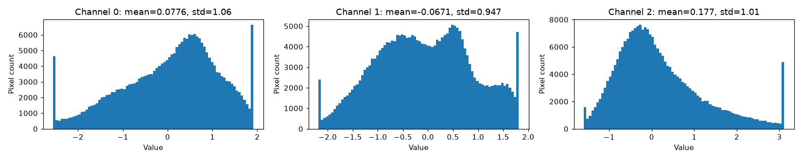
vgg_input_post 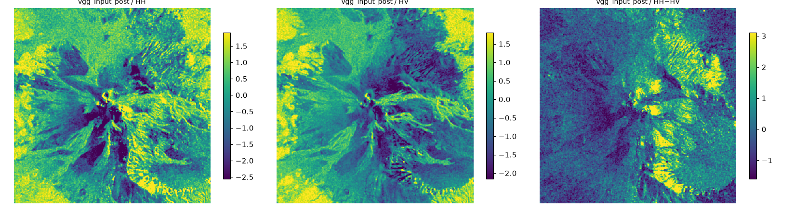
{'name': 'vgg_input_post', 'shape': [3, 498, 500], 'finite_count': 746973, 'minimum': -2.5540257199254195, 'maximum': 3.1090722342683006} standardization_fit_support 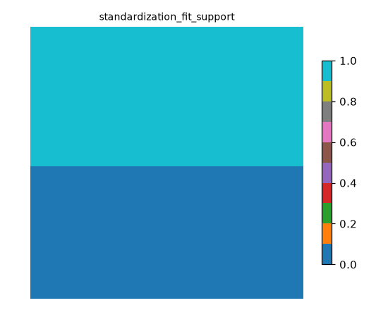
{'name': 'standardization_fit_support', 'shape': [498, 500], 'finite_count': 249000, 'minimum': 0.0, 'maximum': 1.0} 02_vgg_example_patch One inference patch only, at the saved pixel origin. Inputs are NISAR-normalized. VGG block means and first four activation channels are illustrative summaries, not complete feature tensors. Translated output is in normalized network coordinates, not measured backscatter. VGG weights remain frozen. Score inputs additionally show the first three upsampled activation channels after per-date, per-channel minimum/95th-percentile saturation. Their L2 difference across all feature channels yields the patch score; these activation percentiles are separate from input standardization.
normalized_patch_pre {'name': 'normalized_patch_pre', 'shape': [3, 256, 256], 'finite_count': 196608, 'minimum': -2.554025650024414, 'maximum': 3.109072208404541} normalized_patch_post {'name': 'normalized_patch_post', 'shape': [3, 256, 256], 'finite_count': 196608, 'minimum': -2.554025650024414, 'maximum': 3.109072208404541} translated_patch 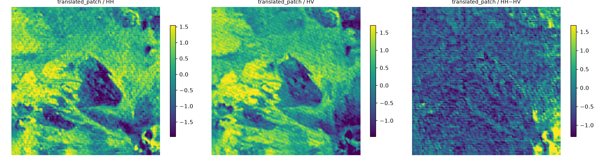
{'name': 'translated_patch', 'shape': [3, 256, 256], 'finite_count': 196608, 'minimum': -2.777029037475586, 'maximum': 4.171995162963867} patch_valid 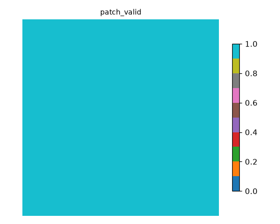
{'name': 'patch_valid', 'shape': [256, 256], 'finite_count': 65536, 'minimum': 1.0, 'maximum': 1.0} vgg_pre_block_0_channel_mean 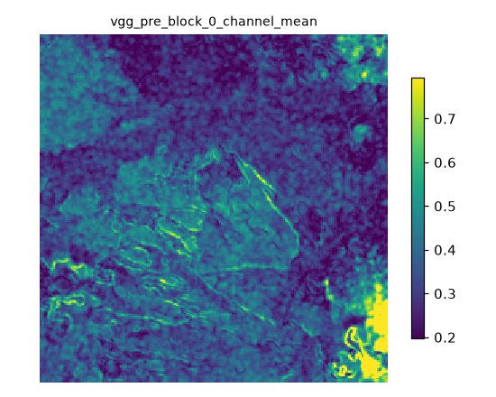
{'name': 'vgg_pre_block_0_channel_mean', 'shape': [256, 256], 'finite_count': 65536, 'minimum': 0.17210349440574646, 'maximum': 1.3790030479431152} vgg_pre_block_0_first_channels 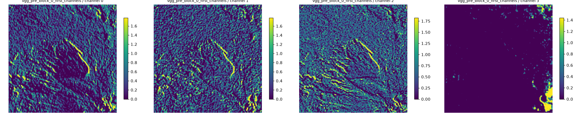
{'name': 'vgg_pre_block_0_first_channels', 'shape': [4, 256, 256], 'finite_count': 262144, 'minimum': 0.0, 'maximum': 6.69523286819458} vgg_pre_block_1_channel_mean 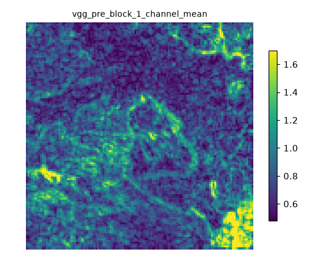
{'name': 'vgg_pre_block_1_channel_mean', 'shape': [128, 128], 'finite_count': 16384, 'minimum': 0.35461995005607605, 'maximum': 2.7808046340942383} vgg_pre_block_1_first_channels 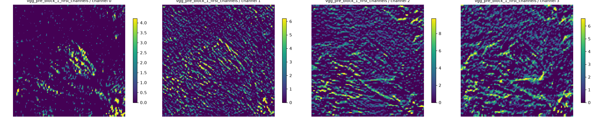
{'name': 'vgg_pre_block_1_first_channels', 'shape': [4, 128, 128], 'finite_count': 65536, 'minimum': 0.0, 'maximum': 21.5557804107666} vgg_pre_block_2_channel_mean 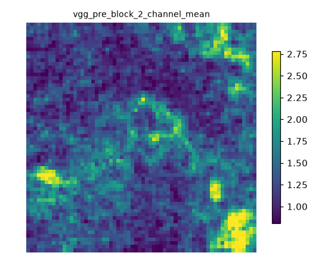
{'name': 'vgg_pre_block_2_channel_mean', 'shape': [64, 64], 'finite_count': 4096, 'minimum': 0.6456137299537659, 'maximum': 3.733281135559082} vgg_pre_block_2_first_channels 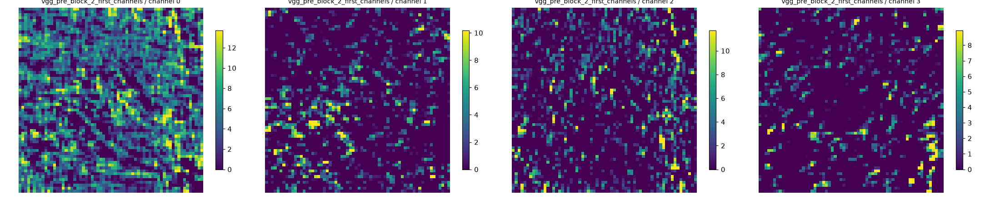
{'name': 'vgg_pre_block_2_first_channels', 'shape': [4, 64, 64], 'finite_count': 16384, 'minimum': 0.0, 'maximum': 33.40140151977539} vgg_pre_block_3_channel_mean 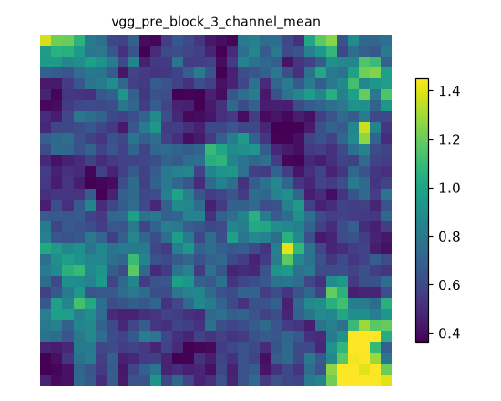
{'name': 'vgg_pre_block_3_channel_mean', 'shape': [32, 32], 'finite_count': 1024, 'minimum': 0.3190223276615143, 'maximum': 2.034350872039795} vgg_pre_block_3_first_channels 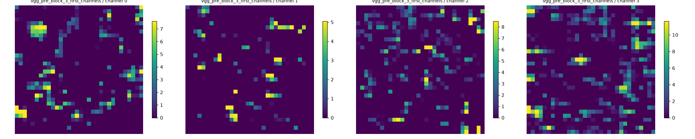
{'name': 'vgg_pre_block_3_first_channels', 'shape': [4, 32, 32], 'finite_count': 4096, 'minimum': 0.0, 'maximum': 23.23586654663086} vgg_post_block_0_channel_mean 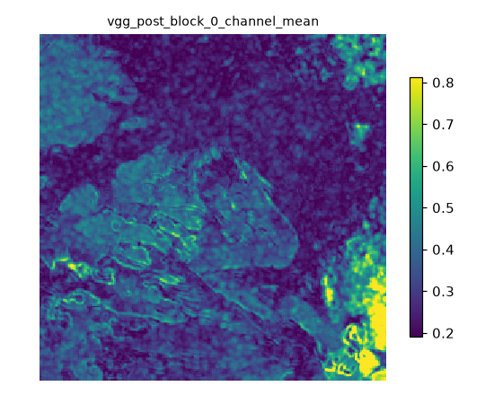
{'name': 'vgg_post_block_0_channel_mean', 'shape': [256, 256], 'finite_count': 65536, 'minimum': 0.17419491708278656, 'maximum': 1.5428636074066162} vgg_post_block_0_first_channels 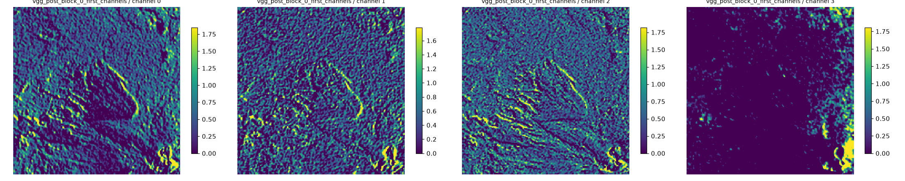
{'name': 'vgg_post_block_0_first_channels', 'shape': [4, 256, 256], 'finite_count': 262144, 'minimum': 0.0, 'maximum': 6.027534484863281} vgg_post_block_1_channel_mean 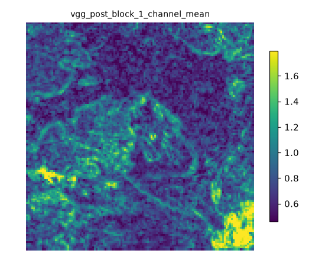
{'name': 'vgg_post_block_1_channel_mean', 'shape': [128, 128], 'finite_count': 16384, 'minimum': 0.3174590468406677, 'maximum': 2.797995090484619} vgg_post_block_1_first_channels 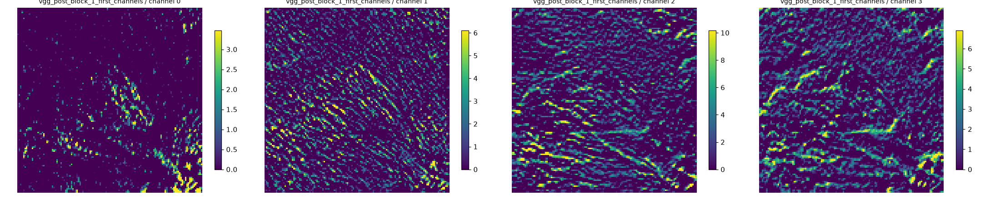
{'name': 'vgg_post_block_1_first_channels', 'shape': [4, 128, 128], 'finite_count': 65536, 'minimum': 0.0, 'maximum': 18.993671417236328} vgg_post_block_2_channel_mean 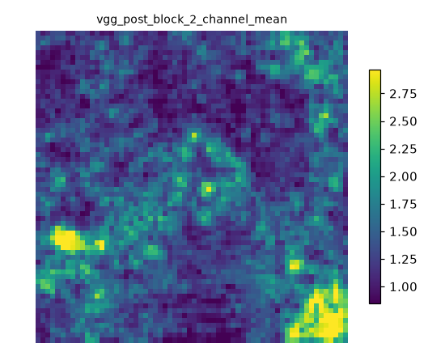
{'name': 'vgg_post_block_2_channel_mean', 'shape': [64, 64], 'finite_count': 4096, 'minimum': 0.7069624662399292, 'maximum': 4.463974475860596} vgg_post_block_2_first_channels 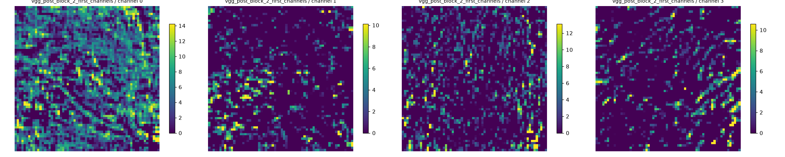
{'name': 'vgg_post_block_2_first_channels', 'shape': [4, 64, 64], 'finite_count': 16384, 'minimum': 0.0, 'maximum': 29.732851028442383} vgg_post_block_3_channel_mean 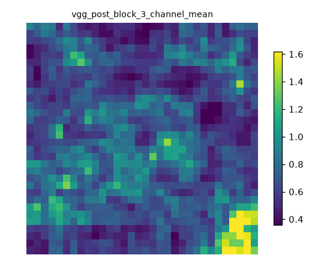
{'name': 'vgg_post_block_3_channel_mean', 'shape': [32, 32], 'finite_count': 1024, 'minimum': 0.29405444860458374, 'maximum': 2.279669761657715} vgg_post_block_3_first_channels 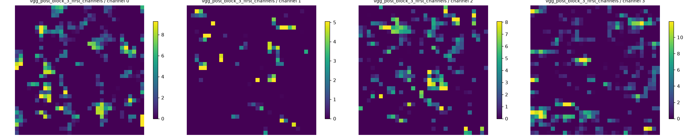
{'name': 'vgg_post_block_3_first_channels', 'shape': [4, 32, 32], 'finite_count': 4096, 'minimum': 0.0, 'maximum': 25.112157821655273} score_block_0_saturated_translated_first_channels 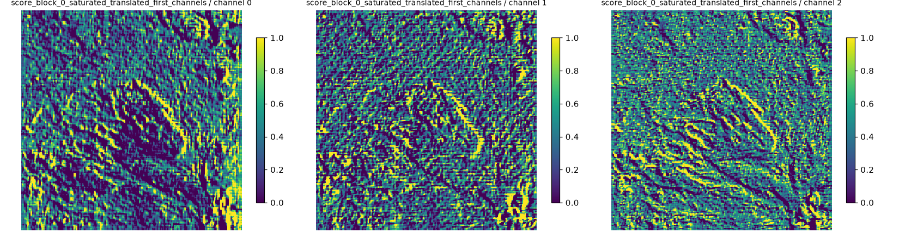
{'name': 'score_block_0_saturated_translated_first_channels', 'shape': [3, 256, 256], 'finite_count': 196608, 'minimum': 0.0, 'maximum': 1.0} score_block_0_saturated_post_first_channels 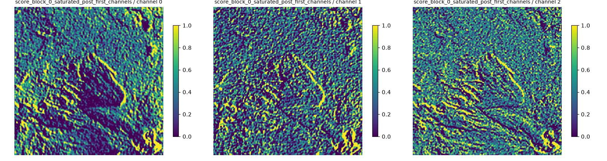
{'name': 'score_block_0_saturated_post_first_channels', 'shape': [3, 256, 256], 'finite_count': 196608, 'minimum': 0.0, 'maximum': 1.0} score_block_1_saturated_translated_first_channels 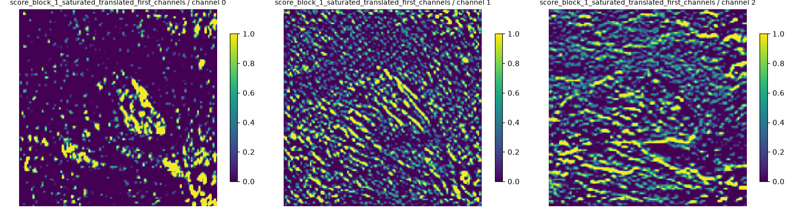
{'name': 'score_block_1_saturated_translated_first_channels', 'shape': [3, 256, 256], 'finite_count': 196608, 'minimum': 0.0, 'maximum': 1.0} score_block_1_saturated_post_first_channels 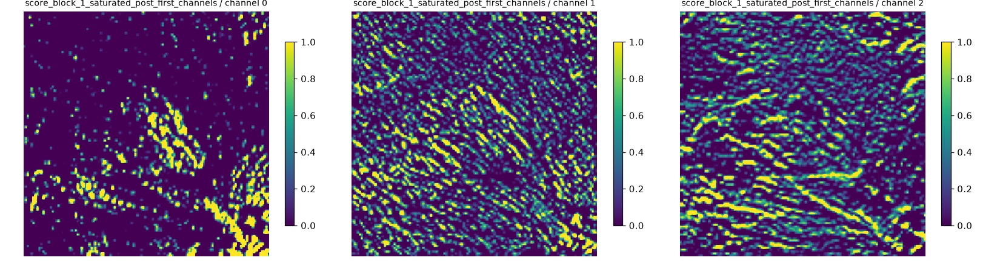
{'name': 'score_block_1_saturated_post_first_channels', 'shape': [3, 256, 256], 'finite_count': 196608, 'minimum': 0.0, 'maximum': 1.0} score_block_2_saturated_translated_first_channels 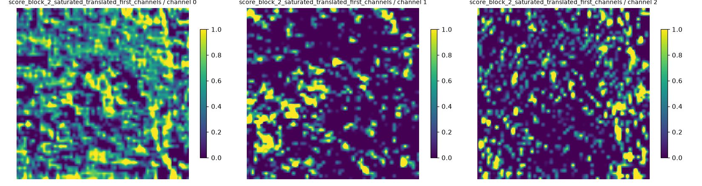
{'name': 'score_block_2_saturated_translated_first_channels', 'shape': [3, 256, 256], 'finite_count': 196608, 'minimum': 0.0, 'maximum': 1.0} score_block_2_saturated_post_first_channels 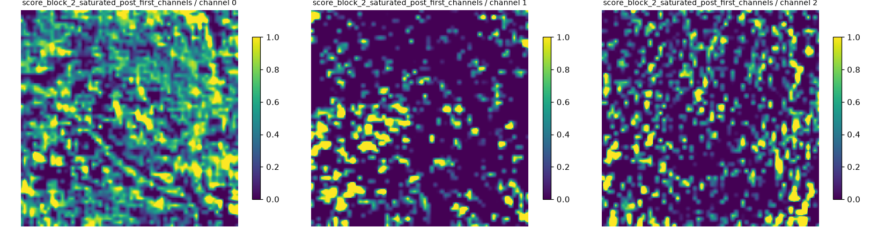
{'name': 'score_block_2_saturated_post_first_channels', 'shape': [3, 256, 256], 'finite_count': 196608, 'minimum': 0.0, 'maximum': 1.0} score_block_3_saturated_translated_first_channels {'name': 'score_block_3_saturated_translated_first_channels', 'shape': [3, 256, 256], 'finite_count': 196608, 'minimum': 0.0, 'maximum': 1.0} score_block_3_saturated_post_first_channels {'name': 'score_block_3_saturated_post_first_channels', 'shape': [3, 256, 256], 'finite_count': 196608, 'minimum': 0.0, 'maximum': 1.0} translated_patch_score {'name': 'translated_patch_score', 'shape': [256, 256], 'finite_count': 65536, 'minimum': 5.099050045013428, 'maximum': 13.649330139160156} 02a_training_targets First fully valid training patch at initialization. Initial feature difference is min-max scaled to a mixing weight. The style target mixes normalized post and pre as (1−weight) × post + weight × pre; content features come from pre. These are fixed cached targets, not predictions of ground truth.
initial_feature_difference {'name': 'initial_feature_difference', 'shape': [256, 256], 'finite_count': 65536, 'minimum': 0.0, 'maximum': 0.9999942183494568} change_weight {'name': 'change_weight', 'shape': [256, 256], 'finite_count': 65536, 'minimum': 0.0, 'maximum': 0.9999942183494568} normalized_training_pre {'name': 'normalized_training_pre', 'shape': [3, 256, 256], 'finite_count': 196608, 'minimum': -2.554025650024414, 'maximum': 3.109072208404541} normalized_training_post {'name': 'normalized_training_post', 'shape': [3, 256, 256], 'finite_count': 196608, 'minimum': -2.554025650024414, 'maximum': 3.109072208404541} mixed_style_target {'name': 'mixed_style_target', 'shape': [3, 256, 256], 'finite_count': 196608, 'minimum': -2.554025650024414, 'maximum': 3.109072208404541} content_feature_channel_mean {'name': 'content_feature_channel_mean', 'shape': [32, 32], 'finite_count': 1024, 'minimum': 0.3190223276615143, 'maximum': 2.034350872039795} 03_detection Full-area blended VGG scores, FCM memberships, adaptive thresholds, seed agreement, RF votes, physical support gates and component removal. comparison_strict_* shows the older Gaussian rule score > 2 × masked Gaussian local mean, with high/low FCM agreement. It is a diagnostic comparison, not an additional gate in the refined detector. Refined thresholds use local median + k × 1.4826 × local residual MAD proxy, bounded below by the configured floor. FCM memberships and RF votes are not calibrated probabilities.
model_support {'name': 'model_support', 'shape': [498, 500], 'finite_count': 249000, 'minimum': 0.0, 'maximum': 1.0} input_valid {'name': 'input_valid', 'shape': [498, 500], 'finite_count': 249000, 'minimum': 0.0, 'maximum': 1.0} guard_safe {'name': 'guard_safe', 'shape': [498, 500], 'finite_count': 249000, 'minimum': 0.0, 'maximum': 1.0} overlap_weight_sum {'name': 'overlap_weight_sum', 'shape': [498, 500], 'finite_count': 249000, 'minimum': 0.01, 'maximum': 1.3301104257439558} translated_score {'name': 'translated_score', 'shape': [498, 500], 'finite_count': 248783, 'minimum': 4.862774848937988, 'maximum': 15.08819580078125} no_translation_score {'name': 'no_translation_score', 'shape': [498, 500], 'finite_count': 248783, 'minimum': 4.761465549468994, 'maximum': 14.669984817504883} comparison_strict_fcm_center_history {'name': 'comparison_strict_fcm_center_history', 'shape': [42, 3], 'finite_count': 126, 'minimum': 0.27189230348335275, 'maximum': 0.5286610835405513} comparison_strict_fcm_clusters {'name': 'comparison_strict_fcm_clusters', 'shape': [498, 500], 'finite_count': 248783, 'minimum': 0.0, 'maximum': 2.0} comparison_strict_fcm_high_binary {'name': 'comparison_strict_fcm_high_binary', 'shape': [498, 500], 'finite_count': 248783, 'minimum': 0.0, 'maximum': 1.0} comparison_strict_fcm_low_binary {'name': 'comparison_strict_fcm_low_binary', 'shape': [498, 500], 'finite_count': 248783, 'minimum': 0.0, 'maximum': 1.0} comparison_strict_fcm_membership_0 {'name': 'comparison_strict_fcm_membership_0', 'shape': [498, 500], 'finite_count': 248783, 'minimum': 7.805052177484173e-14, 'maximum': 1.0} comparison_strict_fcm_membership_1 {'name': 'comparison_strict_fcm_membership_1', 'shape': [498, 500], 'finite_count': 248783, 'minimum': 2.745795669827078e-13, 'maximum': 1.0} comparison_strict_fcm_membership_2 {'name': 'comparison_strict_fcm_membership_2', 'shape': [498, 500], 'finite_count': 248783, 'minimum': 2.0149432523961647e-13, 'maximum': 1.0} comparison_strict_normalized_feature_score {'name': 'comparison_strict_normalized_feature_score', 'shape': [498, 500], 'finite_count': 248783, 'minimum': 0.0, 'maximum': 0.9999955296516418} comparison_strict_gaussian_local_mean {'name': 'comparison_strict_gaussian_local_mean', 'shape': [498, 500], 'finite_count': 248783, 'minimum': 0.3010751008987427, 'maximum': 0.46399107575416565} comparison_strict_gaussian_threshold {'name': 'comparison_strict_gaussian_threshold', 'shape': [498, 500], 'finite_count': 248783, 'minimum': 0.6021502017974854, 'maximum': 0.9279821515083313} comparison_strict_gaussian_adaptive_raw {'name': 'comparison_strict_gaussian_adaptive_raw', 'shape': [498, 500], 'finite_count': 248783, 'minimum': 0.0, 'maximum': 1.0} comparison_strict_gaussian_adaptive_clean {'name': 'comparison_strict_gaussian_adaptive_clean', 'shape': [498, 500], 'finite_count': 248783, 'minimum': 0.0, 'maximum': 1.0} comparison_strict_combined_seed_labels {'name': 'comparison_strict_combined_seed_labels', 'shape': [498, 500], 'finite_count': 248783, 'minimum': -1.0, 'maximum': 1.0} fcm_center_history {'name': 'fcm_center_history', 'shape': [42, 3], 'finite_count': 126, 'minimum': 0.27189230348335275, 'maximum': 0.5286610835405513} fcm_clusters {'name': 'fcm_clusters', 'shape': [498, 500], 'finite_count': 248783, 'minimum': 0.0, 'maximum': 2.0} fcm_high_binary {'name': 'fcm_high_binary', 'shape': [498, 500], 'finite_count': 248783, 'minimum': 0.0, 'maximum': 1.0} fcm_low_binary {'name': 'fcm_low_binary', 'shape': [498, 500], 'finite_count': 248783, 'minimum': 0.0, 'maximum': 1.0} fcm_membership_0 {'name': 'fcm_membership_0', 'shape': [498, 500], 'finite_count': 248783, 'minimum': 7.805052177484173e-14, 'maximum': 1.0} fcm_membership_1 {'name': 'fcm_membership_1', 'shape': [498, 500], 'finite_count': 248783, 'minimum': 2.745795669827078e-13, 'maximum': 1.0} fcm_membership_2 {'name': 'fcm_membership_2', 'shape': [498, 500], 'finite_count': 248783, 'minimum': 2.0149432523961647e-13, 'maximum': 1.0} physical_fcm_agreement_raw {'name': 'physical_fcm_agreement_raw', 'shape': [498, 500], 'finite_count': 248783, 'minimum': 0.0, 'maximum': 1.0} normalized_feature_score {'name': 'normalized_feature_score', 'shape': [498, 500], 'finite_count': 248783, 'minimum': 0.0, 'maximum': 0.9999955296516418} physical_relative_per_pol {'name': 'physical_relative_per_pol', 'shape': [2, 498, 500], 'finite_count': 497566, 'minimum': -0.9723715782165527, 'maximum': 0.9124412536621094} physical_score {'name': 'physical_score', 'shape': [498, 500], 'finite_count': 248783, 'minimum': 0.00030064693419262767, 'maximum': 0.8470803499221802} physical_high_threshold {'name': 'physical_high_threshold', 'shape': [498, 500], 'finite_count': 248783, 'minimum': 0.13597047328948975, 'maximum': 0.8705012798309326} physical_low_threshold {'name': 'physical_low_threshold', 'shape': [498, 500], 'finite_count': 248783, 'minimum': 0.09489133954048157, 'maximum': 0.6353270411491394} physical_high_binary {'name': 'physical_high_binary', 'shape': [498, 500], 'finite_count': 248783, 'minimum': 0.0, 'maximum': 1.0} physical_weak_binary {'name': 'physical_weak_binary', 'shape': [498, 500], 'finite_count': 248783, 'minimum': 0.0, 'maximum': 1.0} physical_fcm_agreement_clean {'name': 'physical_fcm_agreement_clean', 'shape': [498, 500], 'finite_count': 248783, 'minimum': 0.0, 'maximum': 1.0} combined_seed_labels {'name': 'combined_seed_labels', 'shape': [498, 500], 'finite_count': 248783, 'minimum': -1.0, 'maximum': 1.0} connected_candidate_support {'name': 'connected_candidate_support', 'shape': [498, 500], 'finite_count': 248783, 'minimum': 0.0, 'maximum': 1.0} rf_votes {'name': 'rf_votes', 'shape': [498, 500], 'finite_count': 248783, 'minimum': 0.0, 'maximum': 1.0} rf_vote_binary {'name': 'rf_vote_binary', 'shape': [498, 500], 'finite_count': 248783, 'minimum': 0.0, 'maximum': 1.0} rf_raw_mask {'name': 'rf_raw_mask', 'shape': [498, 500], 'finite_count': 248783, 'minimum': 0.0, 'maximum': 1.0} final_mask {'name': 'final_mask', 'shape': [498, 500], 'finite_count': 248783, 'minimum': 0.0, 'maximum': 1.0} pseudo_labels {'name': 'pseudo_labels', 'shape': [498, 500], 'finite_count': 248783, 'minimum': -1.0, 'maximum': 1.0} morphology_removed {'name': 'morphology_removed', 'shape': [498, 500], 'finite_count': 248783, 'minimum': 0.0, 'maximum': 1.0} rf_feature_importance {'name': 'rf_feature_importance', 'shape': [11], 'finite_count': 11, 'minimum': 1.7438989439958007e-05, 'maximum': 0.2946028175032632} overview.png baseline/overview.png no_translation/overview.png Configuration, fitted statistics and diagnostics {
"config": {
"study_id": "etna",
"before": "data/raw/NISAR_L2_PR_GCOV_026_043_A_021_2005_DHDH_A_20260723T040829_20260723T040904_P05023_N_F_J_001.h5",
"after": "data/raw/NISAR_L2_PR_GCOV_028_043_A_021_2005_DHDH_A_20260816T040828_20260816T040903_P05023_N_F_J_001.h5",
"bbox": [
14.943194446669025,
37.70508444125045,
15.056805553330975,
37.79491555874955
],
"output": "/home/marysia/Downloads/sar-change-detection/UCDFormer/UCDFormer/outputs/walkthroughs/etna_20261115_050734_826326",
"vgg": "weights/vgg16-397923af.pth",
"generator": "weights/gen_00794001.pt",
"seed": 123,
"max_updates": 2000,
"max_train_seconds": 7200,
"validate_every": 100,
"patience": 5,
"learning_rate": 0.0001,
"inference_patch": 256,
"inference_stride": 128,
"morphology_min_area_m2": 3600,
"adaptive_sigma_m": 1000,
"reference_labels": null,
"power_mean_filter_size": 3,
"pseudo_method": "physical_feature_v2",
"rf_positive_vote": 0.8,
"pseudo_local_window": 31,
"pseudo_high_k": 3,
"pseudo_high_floor": 0.1,
"pseudo_low_k": 1.5,
"pseudo_low_floor": 0.075,
"pseudo_changed_membership": 0.6,
"pseudo_unchanged_floor": 0.05,
"invalid_context_guard": 8,
"visualize_steps": true
},
"pair_metadata": {
"before": {
"file": "/home/marysia/Downloads/sar-change-detection/UCDFormer/UCDFormer/data/raw/NISAR_L2_PR_GCOV_026_043_A_021_2005_DHDH_A_20260723T040829_20260723T040904_P05023_N_F_J_001.h5",
"channels": [
"HH",
"HV"
],
"available": [
"HH",
"HV"
],
"frequency": "A",
"crs": "EPSG:32633",
"transform": [
20.0,
0.0,
495000.0,
0.0,
-20.0,
4183060.0
],
"shape": [
498,
500
],
"native_window": [
13111,
9666,
13609,
10166
],
"pixel_spacing": [
20.0,
-20.0
],
"mask_attributes": {
"_FillValue": "255",
"description": "b'Mask indicating the subswath number associated with valid GCOV samples. A GCOV sample is only considered valid if it is generated from fully-focused radar samples. If at least one radar sample in the averaging set is partially focused or invalid, the corresponding mask pixel will contain the value 0. GCOV pixels outside of the radar acquisition extent are filled with the value 255'",
"grid_mapping": "b'projection'",
"long_name": "b'Valid samples subswath mask'",
"valid_min": "0"
},
"positive_valid_fraction": 0.999995983935743
},
"after": {
"file": "/home/marysia/Downloads/sar-change-detection/UCDFormer/UCDFormer/data/raw/NISAR_L2_PR_GCOV_028_043_A_021_2005_DHDH_A_20260816T040828_20260816T040903_P05023_N_F_J_001.h5",
"channels": [
"HH",
"HV"
],
"available": [
"HH",
"HV"
],
"frequency": "A",
"crs": "EPSG:32633",
"transform": [
20.0,
0.0,
495000.0,
0.0,
-20.0,
4183060.0
],
"shape": [
498,
500
],
"native_window": [
13111,
9666,
13609,
10166
],
"pixel_spacing": [
20.0,
-20.0
],
"mask_attributes": {
"_FillValue": "255",
"description": "b'Mask indicating the subswath number associated with valid GCOV samples. A GCOV sample is only considered valid if it is generated from fully-focused radar samples. If at least one radar sample in the averaging set is partially focused or invalid, the corresponding mask pixel will contain the value 0. GCOV pixels outside of the radar acquisition extent are filled with the value 255'",
"grid_mapping": "b'projection'",
"long_name": "b'Valid samples subswath mask'",
"valid_min": "0"
},
"positive_valid_fraction": 0.999995983935743
},
"bbox_wgs84": [
14.943194446669025,
37.70508444125045,
15.056805553330975,
37.79491555874955
],
"transform": [
20.0,
0.0,
495000.0,
0.0,
-20.0,
4183060.0
],
"crs": "EPSG:32633",
"shape": [
498,
500
],
"reprojected_after": false,
"registration_status": "same-track geocoded grids; no independent subpixel registration truth",
"feature_names": [
"HH_dB",
"HV_dB",
"HH_dB_minus_HV_dB"
],
"normalization_bounds": [
[
-13.528203010559082,
-1.623680830001831
],
[
-21.769466400146484,
-7.180282115936279
],
[
3.0868701934814453,
14.84044361114502
]
],
"normalization_fit": "both dates, training strip only",
"split": {
"train_rows": [
0,
256
],
"validation_rows": [
370,
498
],
"gap_pixels": 114,
"train_patch_size": 256,
"val_patch_size": 128,
"train_windows": 5,
"validation_windows": 3
},
"vgg_standardization": {
"method": "nisar_pair_channel_zscore_v1",
"input": "percentile_scaled_0_1",
"fit": "both dates, training support only",
"ddof": 0,
"std_floor": 1e-06,
"mean": [
0.5721434022676798,
0.5469867390870914,
0.3387366178835843
],
"std": [
0.22401630406618891,
0.25057455692084685,
0.21268833024461387
]
},
"visualize_steps": true,
"valid_fraction": 0.9999638554216868,
"train_windows": [
[
0,
0,
256
],
[
0,
64,
256
],
[
0,
128,
256
],
[
0,
192,
256
],
[
0,
244,
256
]
],
"validation_windows": [
[
370,
0,
128
],
[
370,
128,
128
],
[
370,
256,
128
]
],
"speckle_filter": "3x3 masked linear-power mean, reflect crop boundary; incomplete interior support excluded",
"power_mean_filter_size": 3
},
"detection": {
"pseudo_method": "physical_local_and_feature_membership_v2",
"fcm_centers": [
0.2749126214207804,
0.3933736968728486,
0.5286610835405513
],
"changed_seeds": 789,
"unchanged_seeds": 12152,
"uncertain": 235842,
"samples_per_class": 789,
"rf_features": [
"pre_HH_dB",
"pre_HV_dB",
"post_HH_dB",
"post_HV_dB",
"signed_HH_dB_change",
"signed_HV_dB_change",
"absolute_HH_dB_change",
"absolute_HV_dB_change",
"HH_normalized_change",
"HV_normalized_change",
"VGG_score"
],
"final_classifier": "temporal-feature RF; uncertain positives require >=0.8 vote and weak physical component connected to positive seed",
"rf_positive_vote": 0.8,
"local_window_pixels": 31,
"threshold_statistic": "local residual MAD proxy; uncalibrated",
"pseudo_changed_membership": 0.6,
"memberships_calibrated": false,
"raw_positive_seeds": 789,
"weak_connected_support_pixels": 2699,
"modification": "new pseudo-label generator, temporal RF descriptors and hysteresis support; not exact original UCDFormer",
"rf_feature_importance_names": [
"pre_HH_dB",
"pre_HV_dB",
"post_HH_dB",
"post_HV_dB",
"signed_HH_dB_change",
"signed_HV_dB_change",
"absolute_HH_dB_change",
"absolute_HV_dB_change",
"HH_normalized_change",
"HV_normalized_change",
"VGG_score"
]
}
}